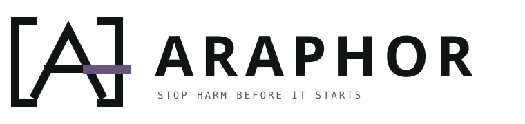

Brand study · Two directions
Marks for a boundary
that holds.
Both concepts place the A at a defended boundary. The forge-violet bar marks the point where policy stops a forbidden action.

Before production, convert the wordmark text to vector outlines and complete a trademark and name-conflict review for Araphor.